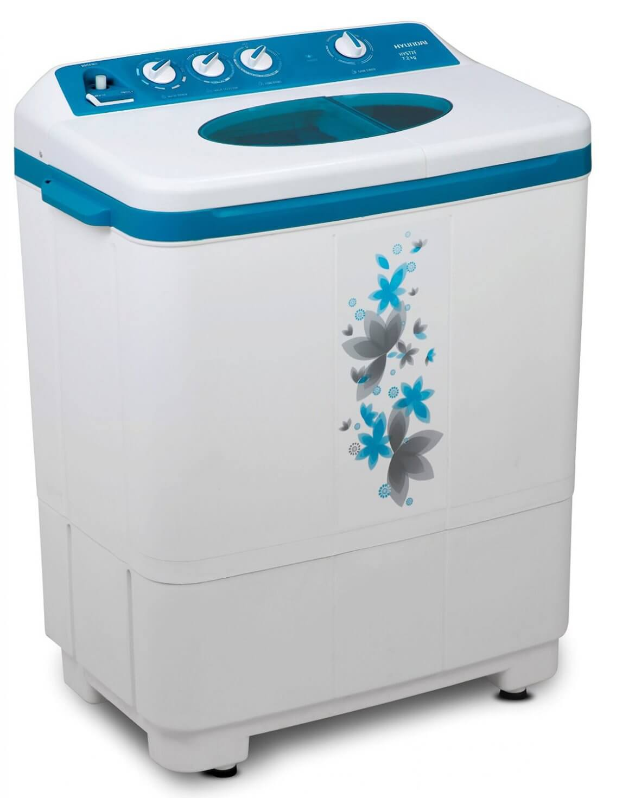

WASHING MACHINE

A washing machine (laundry machine, clothes washer, or washer) is a device used to wash laundry. The term is mostly applied to machines that use water as opposed to dry cleaning (which uses alternative cleaning fluids, and is performed by specialist businesses) or ultrasonic cleaners. The user adds laundry detergent which is sold in liquid or powder form to the wash water.